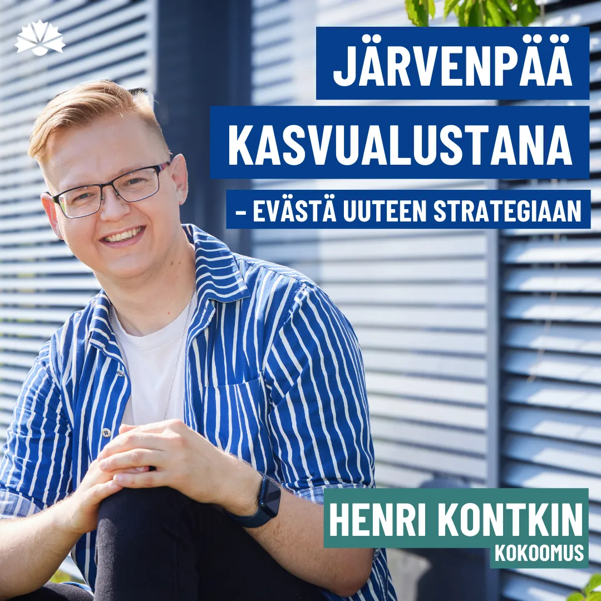
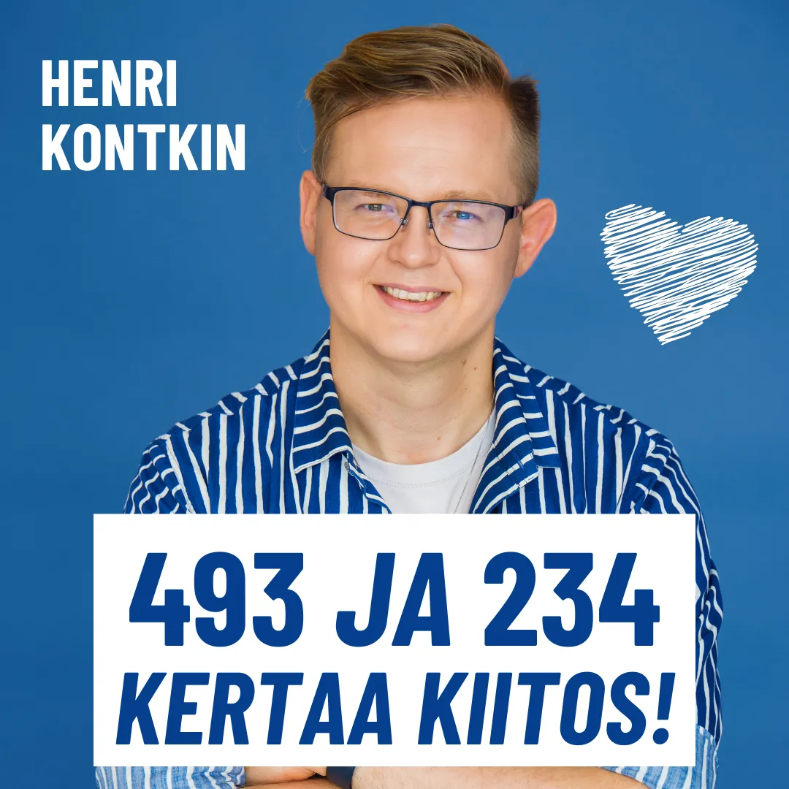
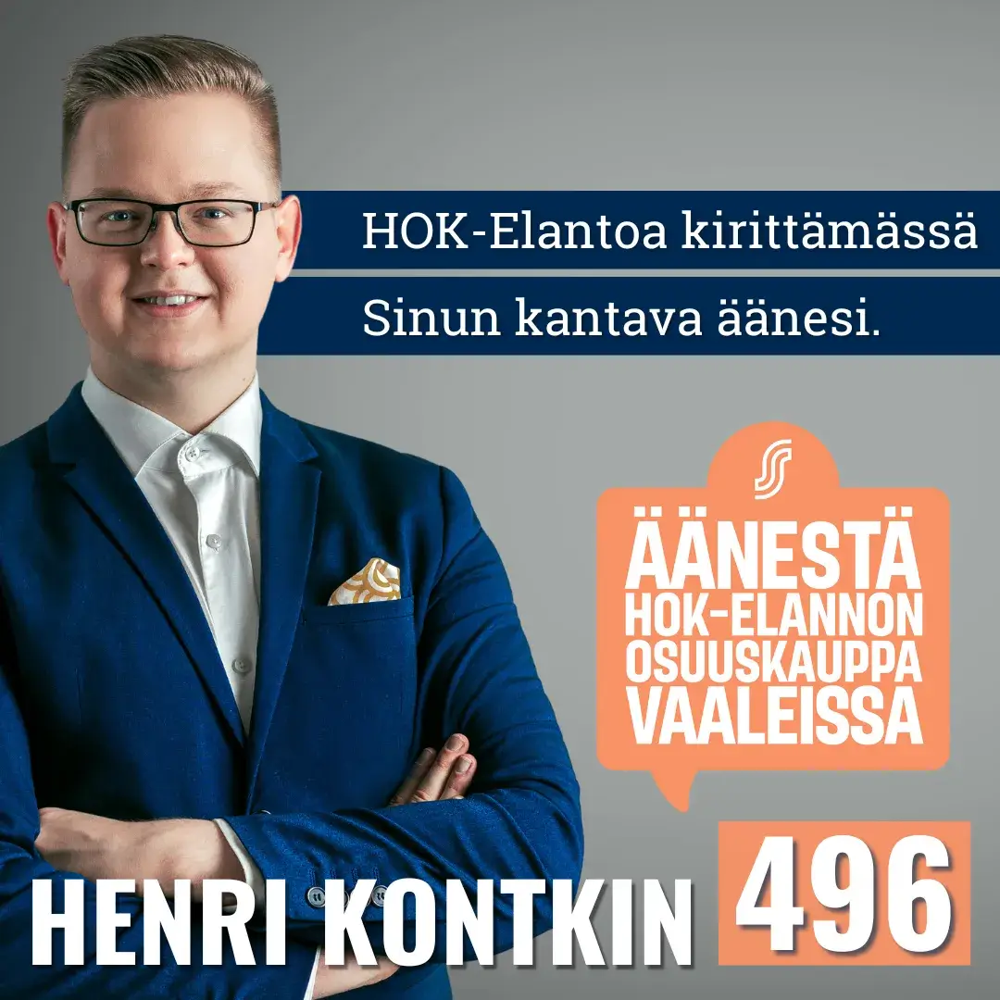
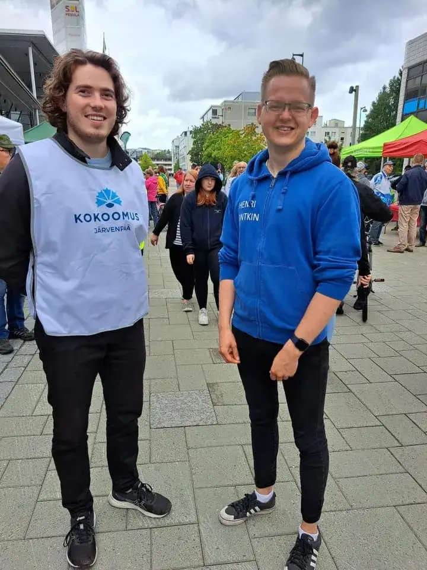
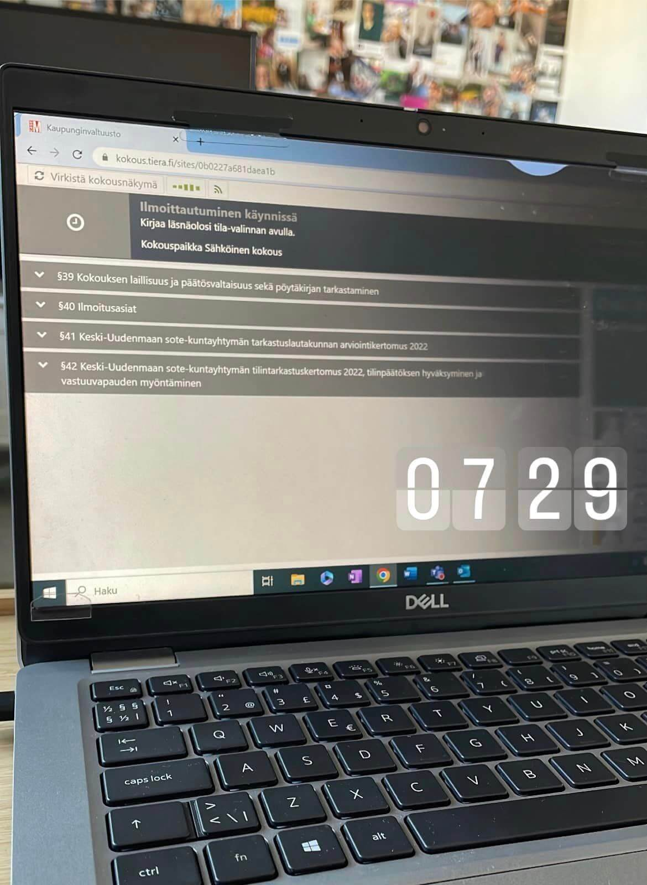
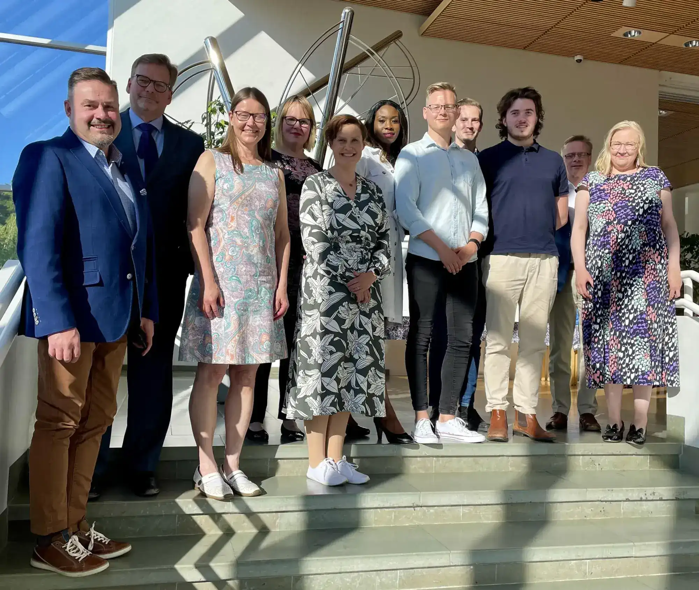
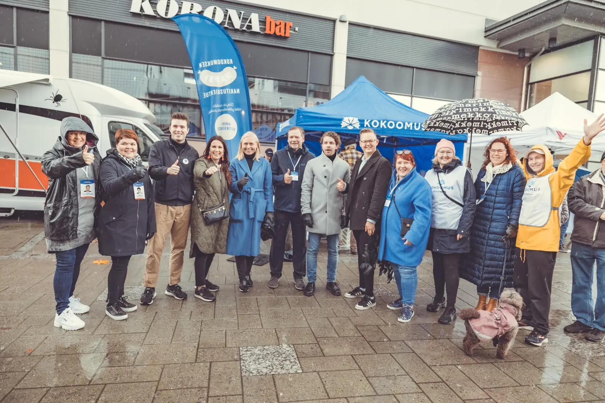
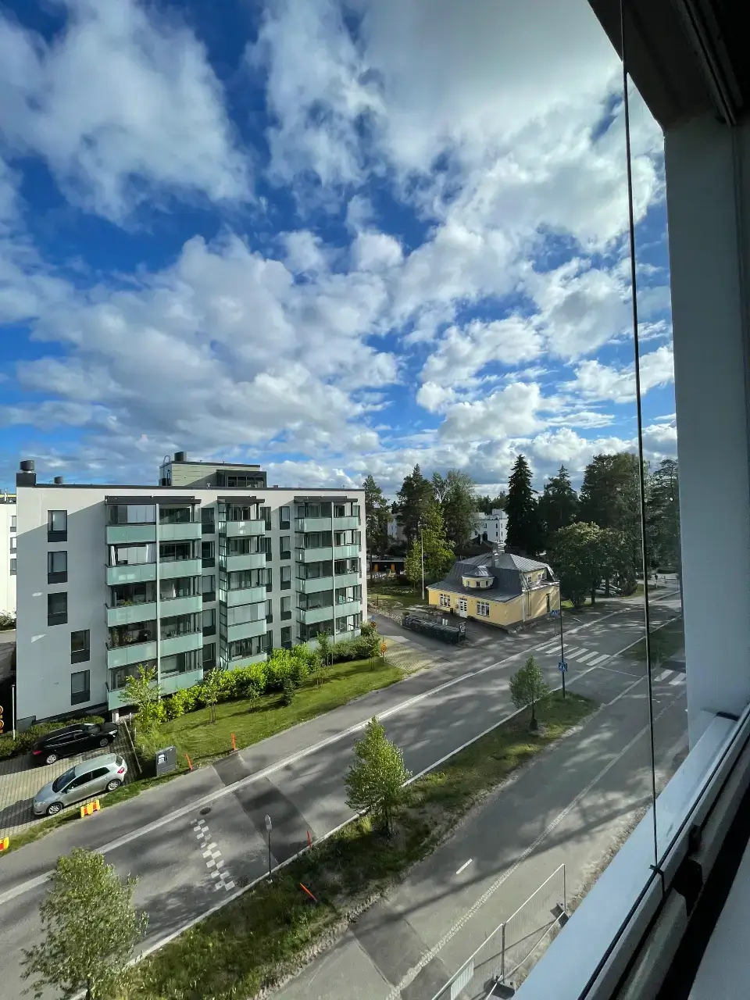

09/2025
Järvenpää kasvualustana – evästä uuteen kaupunkistrategiaan

04/2025
Vahvaa tukea ja muutoksen tuulta – analyysini kunta- ja aluevaaleista 2025

03/2025
Kenelle luotat tuhannet veroeurosi?

03/2025
Järkevä kaupunki investoi nyt maltilla

02/2025
Kuinka luottaisimme enemmän sotepalveluihin?

12/2024
Järvenpään ydinkeskustaan tulossa lisää liike- ja yritystiloja!

12/2024
Hyvä, paha, HSL?

11/2024
Uutisia: Minut nimitettiin Järvenpään kaupunginhallituksen jäseneksi
06/2024
Kaupunkipolitiikan kesälaitumet: Pysäköinti säilyy Järvenpäässä maksuttomana, mutta kaupungin peittävät tummat talouspilvet

03/2024
HOK-Elannon edustajiston vaalit 2024

01/2024
Kohti uutta vuotta ja uusia kaupunkipolitiikan haasteita
11/2023
Politiikan kuukausikatsaus 11/2023: Vähemmän investointeja, vähemmän velkataakkaa Järvenpäälle

09/2023
Järvenpään torilla: Rakentamiskeskustelu ja presidenttiehdokkaat pinnalla

06/2023
Keusoten haasteet ja petosepäilyt: Keski-Uudenmaan sote-aluetta odottavat vaikeat ajat

06/2023
Järvenpään vuoden 2022 talousraportti: Sote-kulut aiheuttivat alijäämän

05/2023
Kaupunginhallitus valittu - Kokoomus vahvistaa asemaansa päätöksenteossa
11/2022
Järvenpään luontoarvojen suojeleminen ja uuden kaupunginjohtajan valinta valtuuston agendalla

10/2022
Kokoomuksen Nakituskiertue pysähtyi tänään Järvenpäässä! 💙

09/2022
Kaupunkikehityslautakunta vaatii tarkempaa kaupunkikuvaa Myllytie 14:lle
Parempaa päätöksentekoa
tehdään yhdessä!
Päätöksenteko ei ole yksilölaji – se on joukkuepeliä, jossa jokainen kuuluviin itsensä saava ääni ja konkreettinen teko vie meitä kohti parempaa Järvenpäätä.
🌟 Tue ja tule mukaan vaikuttamistyötäni! 🌟
Ota minuun matalalla kynnyksellä yhteyttä äänesi ja kerro, kuinka voisimme tehdä Järvenpäästä ja Keusotesta vieläkin parempia. Näin tuet yhteisen äänemme kantamista yhä voimakkaammin päätöksenteossa!
Voit tukea vaikuttamistani monin tavoin: jakamalla viestiä ja kertomalla tekemästäni työstä muille, lahjoittamalla aikaasi tai vaikkapa kertomalla omia ajatuksiasi yhteisten asioiden parantamiseksi kahvikupillisen äärellä.
👉 Tule mukaan tukemaan työtäni ja tehdään yhdessä vaikutus – tulevaisuus rakennetaan nyt!